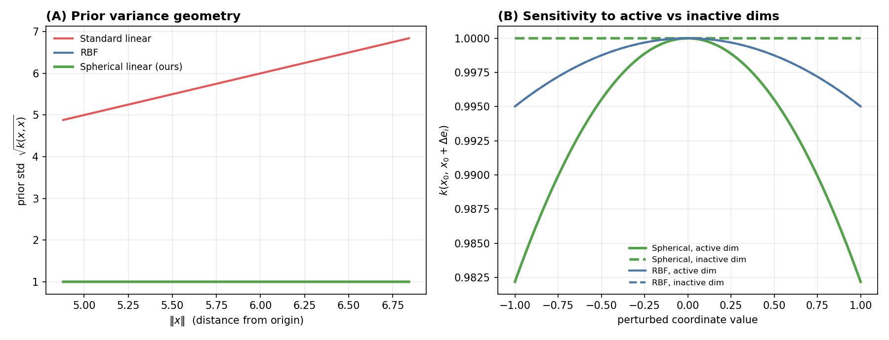
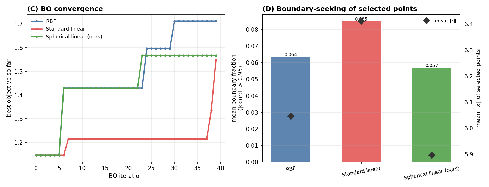

Spherical Linear Gaussian Process for High-Dimensional Bayesian Optimization
Bayesian optimization (BO) shines when you have a handful of expensive evaluations and a surrogate that turns them into good next-query decisions. In high dimensions with few data, though, the usual surrogates get fragile: flexible nonlinear kernels are starved for data, and the simplest fix — a linear kernel — has a subtle geometric defect that drags every query to the boundary of the box. This post follows the method of Spherical Linear Gaussian Process for High-Dimensional Bayesian Optimization, which keeps the low-capacity linear model but reshapes its geometry with an inverse-stereographic projection so that every point has the same prior variance. We rederive the theory, then verify its three core claims on a $D=100$ sparse-sine problem, reproduced end-to-end by the companion notebook.
The idea: a low-capacity surrogate with the right geometry
We want to maximize an expensive black box over a box,
in the regime that makes high-dimensional BO hard: many dimensions, little data,
The BO loop is standard — fit a Gaussian-process surrogate to the data so far, maximize an acquisition function (UCB or expected improvement), evaluate the chosen point, repeat. The surrogate exists to make good decisions, not to approximate $f$ everywhere. That reframing is what licenses a deliberately low-capacity model. The paper's argument is a chain:
- Nonlinear kernels (RBF/Matérn) are data-hungry and their Euclidean geometry degenerates in high dimension;
- a Bayesian linear model is the natural low-capacity alternative — zero curvature, the smoothest non-constant family — but its kernel is boundary-seeking;
- projecting inputs onto a sphere before the linear kernel removes that pathology while keeping the model cheap and stable.
Why RBF geometry degenerates in high dimension
The RBF kernel
depends only on Euclidean distance, and for random points in $[-1,1]^D$ that distance concentrates:
No single lengthscale is safe: $\ell=O(1)$ makes $k\to 0$ (every point looks unrelated), $\ell=O(D)$ makes $k\to 1$ (a near-constant prior), and even the balanced $\ell=O(\sqrt D)$ leaves distances dominated by irrelevant coordinates. Concretely, take $f(x)=\sin(3x_1)$ on $[-1,1]^{100}$ and three points $x=(0.5,0,\dots)$, $x'=(0.52,r_2,\dots)$, $x''=(-0.5,r_2,\dots)$ with the same random tail $r_i\sim\mathrm{Unif}[-1,1]$. Functionally $x\!\approx\! x'$ (first coordinates close) and $x\!\not\approx\! x''$ — but the full-distance RBF at $\ell=\sqrt{100}=10$ barely notices:
The 97 distractor dimensions swamp the one that matters. This is the fragility a lower-capacity surrogate is meant to sidestep.
The linear GP: attractive, but boundary-seeking
A Bayesian linear model $f(x)=w^\top x+b$ with a Gaussian prior on $w$ is a GP with the linear kernel
Zero curvature is exactly the kind of strong, cheap prior that suits high-dimensional low-data BO. The trouble is the prior variance it induces:
On $[-1,1]^D$ this ranges from $0$ at the origin to $D$ at a corner (e.g. $k=100$ at $(1,\dots,1)$ in $D=100$). Any acquisition function that increases in posterior variance — UCB, EI — is therefore pulled toward high-norm points. The paper makes this exact: for such acquisitions the linear-GP optimum always lands on the boundary,
At least one coordinate is pinned to $\pm 1$, regardless of the objective. That is the boundary-seeking pathology.
The spherical linear kernel
The fix keeps the linear model but maps inputs onto a unit hypersphere first, so the magnitude geometry disappears. The kernel is
on scaled inputs $z_i=x_i/(a\,\ell_i)$, where $a>0$ is a global lengthscale (initialized $O(\sqrt D)$) and $\ell_i>0$ are per-dimension (ARD) lengthscales. The map $P$ is the inverse stereographic projection
Its defining property is that everything lands on the unit sphere, $\lVert P(z)\rVert=1$, which collapses the prior variance to a constant:
No point gets an artificial uncertainty bonus for being near a corner — the boundary bias is gone. Yet the model is not a constant prior, because cross-terms still vary: since both projected points sit on the sphere,
the angle between them, so similarity is measured by direction rather than magnitude. A useful identity for implementation and testing rewrites this without forming $P$ explicitly:
The model is linear in the spherical features, $f(x)=w^\top P(z)+c$, hence a compact rational nonlinear family in the original coordinates while staying only $D\!+\!1$-dimensional in feature space. One caveat the paper is careful about: the projection alone fixes variance geometry, not relevance. Distinguishing active from inactive dimensions still needs the per-dimension $\ell_i$ (ARD) — the sphere does not identify the active subspace by itself.
The minimal experiment
A high-dimensional objective with a known, tiny active subspace makes every claim checkable. Only the first three of $100$ coordinates matter:
Three surrogates run the same BO loop with UCB, $\alpha(x)=\mu(x)+\beta\,\sigma(x)$, maximized by random search over a shared candidate pool: an RBF GP (global lengthscale), the standard linear GP, and the spherical linear GP. To probe the theory cleanly, the spherical kernel uses oracle ARD — short lengthscales ($\ell=1$) on the three active dimensions, long ones ($\ell=100$) on the rest — with global scale $a=\sqrt{D}$ and mixture weights $b_0=0.1,\,b_1=0.9$. The exact configuration:
| Setting | Value | Setting | Value |
|---|---|---|---|
| dimension $D$ | 100 | active dims | $\{0,1,2\}$ |
| init design $N_{\text{init}}$ | 10 | BO iterations $N_{\text{iter}}$ | 40 |
| acquisition | UCB, $\beta=2$ | candidate pool | 20,000 (random search) |
| RBF lengthscale $\ell$ | 10.0 | observation noise | $10^{-6}$ (noiseless) |
| spherical $a$ | $\sqrt{D}=10$ | spherical $(b_0,b_1)$ | $(0.1,\,0.9)$ |
| oracle ARD (active) | $\ell_i=1$ | oracle ARD (inactive) | $\ell_i=100$ |
| seed | 0 | RNG per model | re-seeded (shared init & pools) |
Re-seeding the RNG per surrogate means all three see the identical initial design and identical candidate pools, so any difference is attributable to the kernel alone.
Results
The experiment splits into two questions: does the kernel geometry behave as the theory predicts, and does that translate into better BO behavior?
Kernel geometry — verifying the theory

The direct kernel diagnostics put numbers on all three claims:
| Diagnostic | Quantity | Value | Verdict |
|---|---|---|---|
| Claim 1 · linear variance | corr$\bigl(k_{\mathrm{lin}}(x,x),\,\lVert x\rVert\bigr)$ | 0.9995 | variance ∝ norm |
| variance range (min → max) | 23.83 → 46.80 | grows to boundary | |
| Claim 2 · spherical variance | $\max_x\lvert k_{\mathrm{sph}}(x,x)-1\rvert$ | $4.4\times10^{-16}$ | constant $\equiv 1$ |
| RBF concentration | mean $\lVert x-x'\rVert^2$ (expect $2D/3=66.7$) | 66.45 | distances concentrate |
| Claim 3 · active-dim sanity | RBF: $k(x,x')$ vs $k(x,x'')$ | 0.8435 vs 0.8393 | cannot distinguish |
| spherical: $k(x,x')$ vs $k(x,x'')$ | 0.9900 vs 0.9722 | distinguishes |
$x'$ differs from $x$ only slightly on the active coordinate ($0.50\to0.52$); $x''$ flips it ($0.50\to-0.5$) but shares $x'$'s random tail. The spherical kernel with ARD rates $x'$ as more similar than $x''$; the RBF kernel rates them essentially equal.
Bayesian optimization behavior

| Surrogate | best $y$ | mean $\lVert x\rVert$ | mean $\lVert x\rVert_\infty$ | boundary fraction |
|---|---|---|---|---|
| RBF | 1.7129 | 6.0465 | 0.9907 | 0.0635 |
| Standard linear | 1.5497 | 6.4120 | 0.9938 | 0.0850 |
| Spherical linear (ours) | 1.5674 | 5.8965 | 0.9907 | 0.0570 |
Best value per column highlighted. Boundary fraction = mean share of coordinates with $\lvert x_i\rvert>0.95$ among the selected points.
best_y the RBF wins here, which is unsurprising: the objective is smooth and
low-frequency, the friendliest possible case for RBF, and the setup uses oracle ARD rather than
learned lengthscales. The value of the spherical construction is the fixed variance geometry it
buys at essentially linear-model cost.
Reproduce it
The companion notebook re-runs the whole experiment from scratch using only numpy,
scipy, and matplotlib. It implements the three kernels (including the
inverse-stereographic projection with a $\lVert P(z)\rVert=1$ check), an exact Cholesky GP
posterior, UCB with random-search acquisition, and the per-model BO loop, then recomputes the
summary table and the kernel diagnostics and regenerates both figures. Re-seeding the RNG per
model reproduces the reference run exactly — the summary statistics match to
$0$ (bit-for-bit) and the diagnostics to floating-point noise.